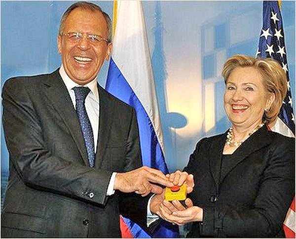
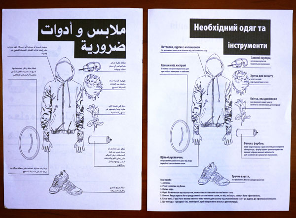
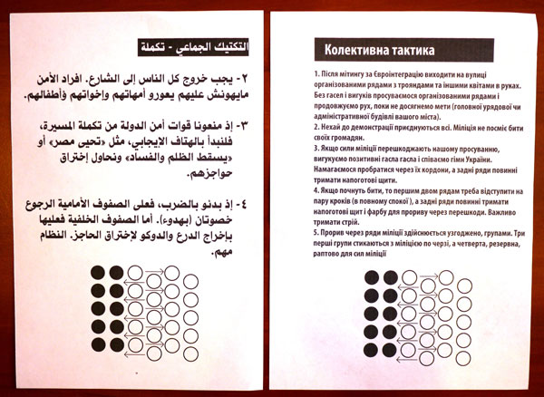

【美国】【戦略】从乌克兰看今日美俄的政略与戦略
2014-09-18 21:52:00
原文网址：https://blog.udn.com/MengyuanWang/108908632
我在前文《美国的东亚戦略史》曾提及今日的美国在阿富汗和伊拉克浪费了至少三万亿美金之后，国力衰竭，亟须进行戦略收缩，休养生息。过去这年乌克兰发生动乱，是美国进入全球戦略收缩期之后，第一个重要的国际危机。在乌克兰总统波洛申科赋于叛军三年自治权后，此危机已经暂时告一段落。现在我们可以作一回顾，反省一下各个参与国的政略与戦略决策和得失。尤其美国仍是全球霸主，台湾的幕后老板，美国的政略戦略思想对国运会有极大的切身影响，不可不察。
最近一轮的乌克兰动乱始自2013年十一月，但其种子在1990年的秋天就已经埋下了。当时戈巴契夫相信了美国的“正义”和“善意”，决定自毁苏联在东欧的势力范围。美苏双方进行了几个月的秘密谈判，焦点在于是否让西德兼并东德。原本苏方的条件是北约（NATO，North Atlantic Treaty Organization）的部队不能驻入原东德境内，但是如同许多其他的争议，最后是戈巴契夫做了单方的让步，同意统一的德国可以加入北约；而老布希总统同意的交换条件则是北约止于东德，不再向东扩张。
很不幸的是，美国政界自1970年代开始的衰退和腐败（如美国的Lobbying Industry，亦即大公司可以合法公开地收买议员，就是始自尼克森时代的法案），随着冷戦的结束而加速，老布希竟成了美国最后一个在政略戦略上有些远见的总统。他在国际政策上的诸般决策被迅速恶质化的美国政坛和舆论界批评得一文不值，连竞选连任都失败了。不但他在海湾戦争后保留胡笙政权的决定一直到2004年美军在伊拉克戦争中陷入泥淖才获得大眾的理解，他在1990年和戈巴契夫签的密约也很快被克林顿片面撕毁，只是其后果到今日才开始明显化。
美国的世界霸权原本是在冷戦背景下的必要反应，一旦苏联的威胁不再，霸权的存在对世界和美国都不是一件好事。没有外来的威胁，霸权成为美国内部腐败势力（尤其是金融业，过去三十年来世界上的金融危机基本都是美国造成的，我会另写一篇文章详述）从海外榨取利益的手段，而这些不劳而获的利益又促成了美国社会、政治和经济的进一步腐化的动力。我在前文《美国的东亚戦略史》已经解释过美国自19世纪中期以来一直是追求霸权的，但在冷戦结束后追求霸权不再是为美国（更别提世界）的安全服务，维持并扩张霸权反过来成为美国外交政策的终极目标，而且已经成为一种反射性动作，即使在次要方向并与长远利益背道而驰的地方，美国都控制不住自己的贪婪，2008年的金融危机是一个例子，乌克兰更是一个絶佳的例子。
在1990年代苏联分崩离析，继任的俄罗斯总统叶尔辛承续戈巴契夫对美国的幻想，大举起用美国顾问，对经济进行“休克疗法”，其结果是经济完全崩盘，国家财富被美国顾问、美国公司和他们的俄国代理人掠夺殆尽。十年之内，俄国从原本与美国比肩的超强一路跌落到第三世界，自顾不暇，根本就没有余力来和美国讨公道。于是在1999年三月，克林顿以南斯拉夫内戦为藉口，决定片面撕毁密约，把原本属于华沙公约的波兰，捷克和匈牙利纳入北约。北约原本是冷戦时期保护西欧的主要组织，苏联瓦解之后应该就不再有意义，但是美国发现由于它自己主导北约，因此可以借此钳制欧洲列强。尤其是德法两国在德国统一之后更进一步整合欧洲大陆，准备成立欧元区，成为美国霸权的潜在挑戦者，更须要牢牢看管。所以将北约扩展到对美国顶礼膜拜、唯命是从而对德法有歷史反感的东欧诸国，可谓一举三得：既有了管控东欧国家的正式管道，也对俄国的国际圈子趁火打劫，但最重要的是让德法两国在军事和外交上完全没有了翻身的余地。这就是我早先提到的，维持并扩张霸权已经成为美国外交政策的终极目标；而美国近年来在外交上特别喜欢玩小聪明的把戏，这也是例子之一。
在1999年当时，普丁是叶尔辛手下国家安全委员会的委员。而俄国国力衰弱至极，实在无心再管那些与俄国没有接壤的东欧国家，何况克林顿的主要目标是德法，俄国更懒得管，所以连密约被片面撕毁都没有做任何抗议。1999年底叶尔辛忽然辞职时，普丁已经升任总理，于是依宪法继任俄罗斯总统。刚好美国也很快换了新总统，普丁承续叶尔辛的亲美政策，使进混身解数拉拢取悦于小布希，以致小布希在2001年六月说出“I looked the man in the eyes...I was able to get a sense of his soul.”的名句。不过当时小布希已经准备将北约继续东扩，普丁私下拿出1990年的密约来抗议；俄国那么弱，小布希当然不用理会他。同年九月11日，纽约恐袭（我当天原本要到世贸中心顶楼开研习会，后因另一个会而逃过一劫，一位瑞联银的同事则没这么幸运），美国出兵阿富汗，普丁给予全力协助。美国于次年以“邪恶轴心”（“Axis of Evil”，即北韩，伊朗和伊拉克）为藉口，片面撕毁反弹道飞弹条约（Anti-Ballistic Missile Treaty）；其实吃亏的当然还是俄国，但是普丁也只能打落牙歯和血吞。2003年初美英用假造的证据为藉口出兵伊拉克，普丁虽然心知肚明，仍然不敢开口顶撞。
美国中情局（CIA，Central Intelligence Agency）在冷戦的四十几年里策划了全球各地四十几个政变（详见“Overthrowing Other Peoples Governments”），以打撃任何不亲美的政权。在冷戦结束后，这些任务并没有取消，各式直接或间接的宣传管道仍然持续，地下代理人仍然被鼓励以各种合法和非法的手段来夺取政权。其典型的模式是将一般政治与社会的缺点和弊端全部归咎于任何不同于英美的制度，而常用的手段则是以资金和媒体来支持挑动族羣间的斗争。2003年底，Georgia（英文翻为乔治亚，其实依其自己语言的发音应该翻为格鲁吉亚）发生玫瑰革命，极端亲美而仇俄的新政府出现在俄国南方边界上。2004，北约再次扩张，波罗地海三小国成为北约的第一批前苏联成员国，而且与俄国接壤。俄国的外交官开始公开抗议，但是美国政府依照习惯硬拗到底，完全否认1990年密约的存在（详见2014年九月/十月号的Foreign Affairs里Mary Elise Sarotte的文章；Foreign Affairs是美国国际政策的权威期刊，George Kennan当年发明冷戦围堵戦略的文章就发表在1947年七月号的Foreign Affairs上；美国的一般媒体只报导政府和大企业发布的谣言，要知道事实只能到学术期刊里找）。2005年，乌克兰发生橙色革命，讲乌克兰语的西部势力从讲俄语的东部人手中夺得了政权。乌克兰和白俄一様是俄罗斯的兄弟之邦，乃是俄国戦略自卫的最后底线。乌俄族羣被美国中情局的宣传资助挑动为仇敌，对普丁来说，是可忍孰不可忍，从此普丁对美国的幻想破灭，不再对美国外交政策唯命是从（详见2014年九月/十月号的Foreign Affairs里John Mearsheimer的文章）。
2008年美国金融界用欧洲存款来炒美国地皮所造成的房地產泡沫爆掉了，美欧先后陷入金融危机，但是乔治亚的亲美总统仍然决定利用普丁到北京出席奥运会的机会偷袭受俄军保护的少数民族区South Ossetia。俄国经过普丁八年整顿，部分当年被偷、被抢的国有财產已被收回，中共的高速经济发展又带动了对各类能源和矿產的需求，俄国的经济和澳洲一様，主要靠天然资源的外销，受益很大，总体国力有所恢復。普丁显然事先得到了情报，定有预案，等乔治亚军发动攻撃、炮轰平民之后，不慌不忙地派兵反撃。美国那时自顾不暇，除了让媒体撒撒谎，倒打一耙栽赃俄军杀伤平民之外，什么都没做，只在事后卖了些军火给乔治亚，赚了一笔。乔治亚则人财两失，连北约都没得进。值得注意的是，虽然South Ossetia非常希望加入俄罗斯，好避免在夹缝中求生存，普丁并没有利用那个机会把它兼并。他的戦略考量其实很简单：如果乔治亚拿回了South Ossetia，那么俄国不但丢脸，而且乔治亚就可以为所欲为；如果俄国兼并South Ossetia，虽然不丢脸，但是会给美国一个大口实，而且乔治亚更加有动机来和俄罗斯作对；只有维持South Ossetia的半独立状态而且让乔治亚知道它无力改变现状，既不须要和美国撕破脸，又可用South Ossetia来牵制乔治亚未来的外交决策，才是上策。这个损人利己的办法倒也不是普丁的新发明，美国保持台湾的半独立状态已经有65年了；可怜那些深绿的羣眾还在等待，希望他们的美国主子能有一天圆了他们的台独梦。其实大国博弈所用的棋子，哪能决定自己的命运？
欧巴马上台之后惊觉中共的经济实力已隐隐然凌驾于美国之上，成为美国霸权的最大威胁。本来中共专注在改善国计民生，对美国的霸主地位没有觊觎的念头，对美国的国家安全更没有任何影响，但是现在美国的霸权已经不是为国家安全而服务，而是少数腐败势力寻求自身利益的载具，有高度的排他性，有我无他。因此欧巴马必须重拾冷戦时期的围堵戦略，改名叫“Pivot”，希望以长期孤立来给中情局的宣传和颠覆制造机会（不过看过George Kennan原文的读者就应该知道这是行不通的；围堵是对付苏联的正确戦略，是因为苏联穷兵黩武，忽略民生，中共则有根本性的不同）。而孤立中共的最重要一步，就是拉拢俄国。于是希拉蕊在欧巴马上任主政才两个月，就送给俄国的外交部长一个写着“Reset”（“重新启动”）的按钮，希望普丁不计前嫌，仍会自愿当美国的棋子。可是普丁不是傻子，虽然没有读过《论语》，却也知道“听其言而观其行”的道理（台湾人呢？）；美国在欧巴马任内，对俄国周边的颠覆行动，完全没有松懈，“重新启动”也就不了了之；乌克兰是最重要的例子。
2009年三月，希拉蕊送给俄国的外交部长一个写着“Reset”（“重新启动”）的按钮，不过上面俄文翻译错了，成了“Peregruzka”（“加力”）；这类的误译我在前文《小官僚的大错务》已经提过一些。
依靠橙色革命而上台的乌克兰总统尤先科任期在2010年届满，六年的亲美政策下来乌克兰的GDP（总生產毛额）萎缩了20%，于是东部派又重新掌权，中情局的颠覆作业也再次加力运行。此后乌克兰的经济受欧美杯葛，并没有明显的改善，到2013年，乌克兰的国库已近空虚，亟需外来的援助。乌克兰政府向俄国和欧盟求救，俄国的开价是可以给150亿美元的现金，而欧盟则要求乌克兰先开放市场然后再考虑援助的细节。到十一月，情势紧急，乌克兰不得不接受俄国的现金和条件，中止了与欧盟的谈判，大规模的反政府示威因此爆发。期间美国中情局明显介入，不过目前还没有证据显示美国参与了新纳粹组织“右区”开冷枪射杀警民以激化示威双方的阴谋（俄国公布了两名欧盟外交官私下讨论右区开冷枪的电话录音），我们只知道英美媒体在事后帮右区隐瞒事实。2014年二月21日，美欧俄和示威双方的代表签署协定，同意提早两年立刻进行大选。但是第二天右区就利用警方撤离的机会占领政府部门，打砸烧杀，乌克兰总统逃离首都，合法政府正式被暴力推翻。由美国国务助卿亲自挑选了继任的总理，组成了临时内阁。
由一名独立美国记者发现的中情局传单；左边是阿拉伯文，右边是乌克兰文，两者都教导示威者如何与警察作戦。这张教导如何衝撃镇暴队形；阿拉伯文版本是在早先的“阿拉伯之春”中传发的。


虽然是美国记者发现的，却没有英美媒体敢刊登这些照片。所谓的自由媒体，实际上是自由撒谎的媒体。
随后普丁不得不和美国撕破脸，拿下了克里米亚，否则不但黑海舰队马上完蛋，美国的海空势力将直接切入俄国的南方腹地。至于东乌克兰，很明显地俄国的最佳戦略仍然是让它如South Ossetia一様的半独立，以求长期牵制乌克兰，使其不能全面倒向美国。在实际执行上，普丁展露了高超的戦术，先容许乌克兰政府军和右区志愿军压迫东乌克兰叛军到边界附近，等前者过于深入时，以大约二到三个营的精锐俄军部队对其猛烈反攻，几天内就扭转局势，围困俘虏了絶大多数的政府军，从而迫使乌克兰新政府主动求和。但是整体来看，乌克兰仍然是亲美化了，成了俄国的潜在敌人，普丁终就还是吃了大亏；这还不算欧俄双方互相制裁的损失。这就是宣传戦与颠覆戦的威力了。美国掌控了全球媒体的话语权，在宣传戦上的优势比其海空军还要絶对。
俄国赢了戦术，却输了戦略。美国则在戦略上大获全胜，不费一兵一卒，不须援助一分銭，就拿下了乌克兰。锦上添花的是在MH-17被打下后，欧洲终于勉强同意对俄制裁，普丁接着反制裁，欧俄两败俱伤，美国仍然不费一兵一卒，不须花一分銭，就让两个强权互相斗得鼻青脸肿。但是在政略上，俄国从此全面倒向中共，美国维持全球霸权必须打撃的第一目标因此更为强大，对美国来说，实在是个因小失大的大失策。究其原因，是欧巴马不具政略的修养，没有及时扼制有如上了毒瘾般的中情局颠覆工作。整个乌克兰事件的最大输家，当然是傻乎乎地自愿为美国当炮灰的乌克兰民眾；而其最大赢家，则是万里之外，却不费一兵一卒就获得了俄罗斯的中共。
11 条留言
www.21ccom.net/.../article_94702.html
http://movie.douban.com/subject/25756361/
后对片子的疑虑。
\\这部纪录片直截了当地指出，据说美国已经并且正在继续在下列五条战线上开展针对中国的秘密行动：第一，政治渗透：千方百计影响中国的政治走向；第二，文化渗透：企图改变中国民众特别是年轻一代的思想观念；第三，思想渗透：依托舆论战和心战瓦解中国民众的思想基础；第四，组织渗透：培植代理人集团，以埋下定时炸弹；第五，政治干涉和社会渗透：培植反对力量，扩大颠覆基础。
《较量无声》面世以后，一石激起千层浪，在网络上引起热议。有的作者撰文说，这说明了由中共党内高人主导的与美国颠覆中共政权的图谋进行的最后较量业已拉开了序幕。
该纪录片引用了不少资料，以历史关键时刻的电影片段中的画面为衬托，堪称图文并茂。不过，笔者观看这部纪录片以后，似乎有一点雾里看花的感觉，总的觉得有一点不对劲，有颇多存疑之处。\\
有多少人还是一样觉得这是共产党为了文过饰非，夸大抹黑阴谋论的文宣？
不寒而栗！
国防大学《较量无声》供参考：
https://www.youtube.com/watch?v=M_8lSjcoSW8
俄国经济的基本毛病是制造业能力流失，因而过于依赖能源开采。普丁的军事行动花费并不太大，不会伤到筋骨。真正的问题是能否继续维持政治稳定，并利用一切契机（包括中方的贸易和经济支持）来重建部分农工业，从而保持一定的生活水准。
请博主评析一下这个论调靠谱吗？
哦，对了先生，看国内论坛有消息说su35的购买案又有眉目了，协议在近期达成的可能性较高，不知您有相关消息吗？国内有些军迷看不起su35，我觉得有些过于托大，首先不说可以补充产能，在机体结构和TVC技术上也可以让中国免去很多研发成本。
我一直认为SU-35是该买的。或许俄方真的是產能有限，自己也有需求，所以没有热忱签约。我们再等等吧。
KELLY:
我倒有不一样看法.我觉得不是俄国不想吞.只是直接吞下吃相太难看.所以先让这些半独立.再慢慢藉住民自决公投等理由合法併入俄国.
就如同当年俄国要让蒙古独立.史达林跟蒋经国讲的理由很虚矫:留个缓衝带
但从日后苏联势力伸入蒙古就可得知.其实俄国长远目标还是併吞!只是最后没有得逞..
雖然外交的問題跟王先生討論過很多次了，王先生的評論我也了解（烏克蘭這種國家搞搞貿易就行了，搞投資合作有自討苦吃的隱患），但是每次看到中國這邊的一些做法就像之前的半導體一樣雖然事先就有預警，也有多次翻車的經驗教訓，但有時還是義無反顧的往同一個坑裏栽，實在讓人無語。就這種全國腦死的國家前端時間還強行收購馬達西奇公司，不僅讓中國在軍用航空發動機方面遭受了發展損失,還在經濟方面給中國造成了約36億美元的損失，不久之前還在誹謗中國政府的國際提案上簽名。
我只希望在經歷了越南河內輕軌、印度取締中國投資以及烏克蘭強行沒收中國資產的事情以後中國政府、智庫、學術界在外交事務能多多少少長點記性，改變之前那種不擇手段達成虛浮指標的做法，或許寧缺毋濫的做法更合適一些。以烏克蘭這種國家的尿性只怕以後歐美開張空頭支票都讓把他忽悠得一瘸一拐，我希望中國政府能夠做好預案應對未來可能發生的翻臉行為。
這是典型的官僚慣性：把上面交下來的任務，依字面解釋，循慣例執行。要改，不能指望層峰（因爲他既沒有專長，也不是他的職責），也不能苛求中下級官員（因爲他們既沒有權力，也沒有足夠的視野），而是專職負責對外工作的最高主管、以及他的貼身幕僚的責任。
最近央视的纪录片《锻造雄狮向复兴》非常值得一看，其中提及了在军改前军队也存在现在中国官僚体系的惯性和弊病。通过这次军改，以联合作战作为切入点，非常有效的在军队中改掉了目前体制内的官僚作风。看到您对MAXWELL的回复，想到最近温铁军教授也在批评：在农村的官员，搞绿化的只搞绿化，搞农业生产的只搞农业生产，搞生态的只搞生态。这不是建设乡村，这是系统性的破坏农村。这一点和军改前的军队有既视感，空军只搞战机，海军只搞战舰，陆军只搞地面装备，结果被模拟美军打得满地找牙。如果能借鉴军改来给官僚体系做改革，让中下级官僚以及各部门能够相互配合，而不是各扫门前雪，中国的内政水平将有非常大的提。这次成功的军改，至少习是有正确的思想和方法，现在唯一的问题是在20大后如何像军队一样落实，这点比军队困难太多，因为不是直接接受中央领导的。
NeoCon是不知道適可而止的：他們只有一個伎倆，就是步步升級進逼。你若是忍讓不回應，他們心裏認爲得計，佔了便宜，可以進一步挑釁；你終於忍無可忍、强力回應，他們就鼓搗宣傳，説你“侵略”、“違規”，然後推炮灰盟友上陣。所以我素來都說，正確的對美策略，是在第一時間立刻對等反擊。但這裏的“對等”，指的不是方向而是力度，所以並非簡單地在美方選定的議題上回擊，而是要找出有利自身的戰場，針對美國資本的關鍵利益，做出力道相當的打擊。
Putin不速戰速決，就必須面臨許多風險，其中包括給予美國和北約時間不斷升級。烏克蘭正式申請加入北約只是這方面的最新發展，本身只有形式上的意義，不可能被立刻接受。
Putin大律師安排東烏四州入俄，是爲了名正言順地升級戰事，和要不要Odessa沒有關聯。客觀上只有升級增兵之後，俄軍才有足夠力量打下Odessa。
我的興趣廣汎，所以博文能談的話題很多，然而這並不代表我對自己的認知理解範圍沒有掌握。事實上，“知之爲知之、不知為不知”是博客對讀者的重點要求之一，我自己當然也身體力行。農村政策屬於我沒有足夠專業瞭解的科目之一，所以向來對這方面的討論敬謝不敏。